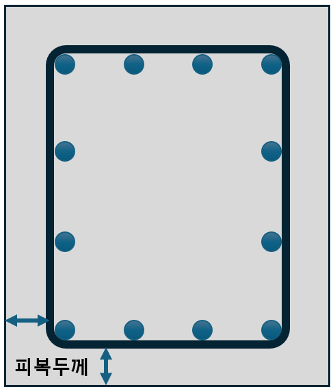

1) 내구성 관련 한국 설계기준의 구성 · 단계별 참고 기준
노출환경·노출등급
환경(탄산화·염화물·동결융해 등)과 등급을 정해 설계 입력을 확정.
KDS 14 20 40(내구성)
- 범주 E/EA/EC/EF/ES
- 세부 등급(E0, EA1…)
- 수명·환경조건 반영
재료·배합·품질
재료 선택·배합·시공 품질관리 조건.
KCS 14 20 10
- 배합·운반·타설·양생
- 환경대응 품질관리
강도·피복·상세
최소 강도·피복두께·허용균열폭 등.
KDS 14 20 40 / 50
- 최소 압축강도
- 최소 피복두께
- 허용균열폭
2) Exposure Class (노출등급) 그림 예시
3) 필터 버튼
KR_Class1
Member
세부 등급 (KR_Exposure_Class)
4) 표
KOR_Class_table_Main
KOR_Guide (선택 상태에 따른 필터)
보조표: KOR_Sulphate_Soil
보조표: KOR_Sulphate_Water
강조 열: Min_Con_Str
피복두께 – 정의 & 개념도
최소 피복두께란:
- 횡철근이 주철근을 감싸는 경우: 콘크리트 표면 → 스터럽·띠철근·나선철근의 바깥 표면까지의 최단거리
- 그렇지 않은 경우: 콘크리트 표면 → 가장 외단 주근의 표면까지의 최단거리
- 포스트텐셔닝 프리스트레싱 강재: 콘크리트 표면 → 덕트(duct) 또는 철제 접속구의 표면까지의 최단거리
측정은 항상 최단거리 기준(곡면·모서리 포함).

필터
표
허용 균열폭 (KDS 14 20 30)
환경조건에 따라 기준값과 k·cc 중 큰 값을 허용치로 적용합니다. cc는 최외단 주철근의 표면과 콘크리트 표면 사이의 최소 피복 두께(mm).
| 강재 | 건조 환경 | 습윤 환경 | 부식성 환경 | 고부식성 환경 |
|---|---|---|---|---|
| 철근 | 0.4 또는 0.006 cc 중 큰 값 |
0.3 또는 0.005 cc 중 큰 값 |
0.3 또는 0.004 cc 중 큰 값 |
0.3 또는 0.0035 cc 중 큰 값 |
| 긴장재 | 0.2 또는 0.005 cc 중 큰 값 |
0.2 또는 0.004 cc 중 큰 값 |
– | – |
| 구분 | 휨인장균열 | 전 단면 인장균열 |
|---|---|---|
| 오염되지 않은 물¹ | 0.25 | 0.20 |
| 오염된 액체² | 0.20 | 0.15 |
¹ 예: 음용수(상수도) 시설물 · ² 오염이 매우 심한 경우 발주자와 협의하여 결정
간단 계산기 (KDS)
환경·강재를 선택하고 필요한 경우 피복두께 cc(mm)를 입력하세요.
cc는 최외단 주철근의 표면과 콘크리트 표면 사이의 최소 피복 두께 (mm)
wa = max(기준값, k·cc)
– mm
참고: ACI · Eurocode 허용균열폭 (요약)
ACI (미국)
- ACI 318은 균열폭 한계를 직접 지정하기보다는 철근 응력·간격을 통한 균열제어 절차를 제시.
- ACI 224R 권장값(실무 참고):
- 건조 실내 등 미노출: 약 0.41 mm
- 습윤·일반 노출: 약 0.33 mm
- 제빙염·해수 등 가혹: 약 0.25 mm 또는 이하
- 수밀 요구(저수조 등): 0.10 mm 수준
- ACI 350(환경/수처리 구조): 누수 제어 목적상 더 엄격한 제한(대체로 0.25 mm 이하)을 적용.
Eurocode 2 (EN 1992-1-1)
- 권장 허용균열폭 wmax 예시(국가부록에 의해 조정 가능):
- 일반 내구성: 보통 0.3 mm
- 가혹한 노출(염해·빙해 등): 0.2 mm
- 엄격한 수밀: 0.1 mm
- EC2는 하중조합(준영구/빈발 등)과 상세에 따른 계산 절차를 병행하도록 규정.
※ 요약 참고값이며 실제 적용은 해당 국가부록/명세 확인 필요.
재료·배합요구사항
아래 표는 첨부된 page.tsx의 MATERIAL_REQUIREMENTS 표를 SPA에 맞게 변환·삽입한 것입니다.
주 1) 경량골재 콘크리트에는 적용하지 않음. 석회, 연구성과 등에 의하여 확장이 있을 때는 5% 더한 값으로 할 수 있음.
2) KS F 2715 적용, 재령 28일～42일 사이
2) KS F 2715 적용, 재령 28일～42일 사이
보조표: KCS 14 20 44의 표 2.2-1 — 내구성으로 정해지는 최소 단위 결합재량(kg/m³) (클릭하여 열기/닫기)
| 환경구분 | 굵은 골재의 최대 치수 (mm) | ||
|---|---|---|---|
| 20 | 25 | 40 | |
|
물보라 지역, 간만대 및 해양대기중 (노출등급 ES1, ES4) |
340 | 330 | 300 |
|
해중 (노출등급 ES3) |
310 | 300 | 280 |
주 1) KCS 14 20 10(1.9.2)에 규정된 노출등급 참조
보조표: KCS 14 20 10의 표 1.9-4 — 노출범주 EA에 따른 결합재 종류 (클릭하여 열기/닫기)
| 노출등급 | 결합재의 종류¹⁾ | 염화칼슘 혼화제 사용유무 |
|---|---|---|
| EA1 |
|
제한 없음 |
| EA2 |
|
허용하지 않음 |
| EA3 |
|
허용하지 않음 |
1) ASTM C 1012에 따라 황산염 저항성 시험을 시행하여 최대 팽창 기준을 만족하는 경우에는 결합재 조합과 다른 조합을 사용할 수 있다.
2) 해수에 노출되는 경우에 물-결합재비가 0.40 이하이면 C3A 함량이 10%까지인 1종 또는 3종 등 다른 종류의 시멘트를 사용할 수 있다.
3) EA1, EA2에 대해서는 1종이나 3종을 허용할 수 있다. 단, EA1은 C3A 함량이 8% 미만인 경우에 한해 허용한다.
4) 5종 시멘트와 함께 사용할 경우에 황산염에 대한 저항을 개선한 실적이 있거나 실험에 의해 증명된 포졸란 또는 슬래그.
2) 해수에 노출되는 경우에 물-결합재비가 0.40 이하이면 C3A 함량이 10%까지인 1종 또는 3종 등 다른 종류의 시멘트를 사용할 수 있다.
3) EA1, EA2에 대해서는 1종이나 3종을 허용할 수 있다. 단, EA1은 C3A 함량이 8% 미만인 경우에 한해 허용한다.
4) 5종 시멘트와 함께 사용할 경우에 황산염에 대한 저항을 개선한 실적이 있거나 실험에 의해 증명된 포졸란 또는 슬래그.
보조표: KCS 14 20 10의 표 2.2-6 — 공기연행콘크리트 공기량의 표준값 (클릭하여 열기/닫기)
| 굵은 골재의 최대 치수 (mm) | 공기량(%) | |
|---|---|---|
| 심한 노출¹⁾ | 일반 노출²⁾ | |
| 10 | 7.5 | 6.0 |
| 15 | 7.0 | 5.5 |
| 20 | 6.0 | 5.0 |
| 25 | 6.0 | 4.5 |
| 40 | 5.5 | 4.5 |
1) 노출등급 EF2, EF3, EF4
2) 노출등급 EF1
2) 노출등급 EF1
보조표: KCS 14 20 10의 표 2.2-7 — 제빙화학제¹⁾에 노출된 콘크리트 최대 혼화재 비율 (클릭하여 열기/닫기)
| 혼화재의 종류 | 시멘트와 혼화재 전체에 대한 혼화재의 질량 백분율(%) |
|---|---|
| KS L 5405에 따르는 플라이 애시 또는 기타 포졸란 | 25 |
| KS F 2563에 따르는 고로 슬래그 미분말 | 50 |
| 실리카 흄 | 10 |
| 플라이 애시 또는 기타 포졸란, 고로 슬래그 미분말 및 실리카 흄의 합 | 50²⁾ |
| 플라이 애시 또는 기타 포졸란과 실리카 흄의 합 | 35²⁾ |
1) 노출등급 EF4에 해당함.
2) 플라이 애시 또는 기타 포졸란의 합은 25% 이하, 실리카 흄은 10% 이하이어야 한다.
2) 플라이 애시 또는 기타 포졸란의 합은 25% 이하, 실리카 흄은 10% 이하이어야 한다.